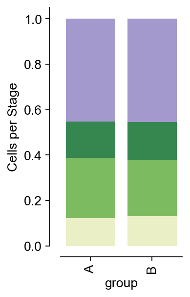
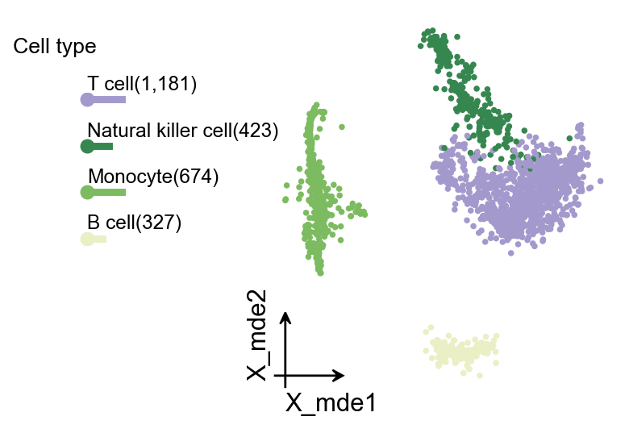
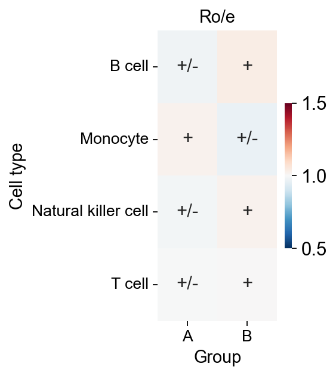
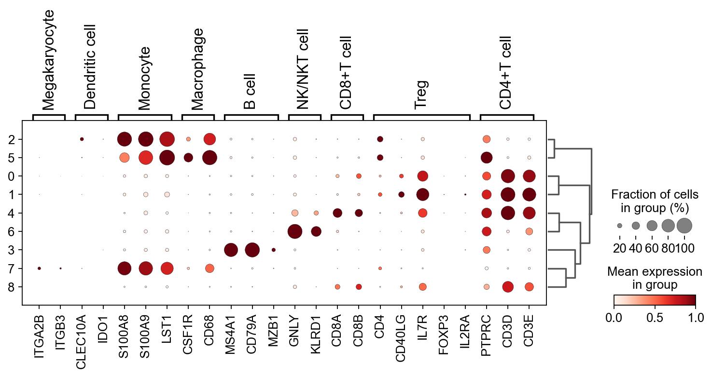

Celltype auto annotation with SCSA#
Single-cell transcriptomics allows the analysis of thousands of cells in a single experiment and the identification of novel cell types, states and dynamics in a variety of tissues and organisms. Standard experimental protocols and analytical workflows have been developed to create single-cell transcriptomic maps from tissues.
This tutorial focuses on how to interpret this data to identify cell types, states, and other biologically relevant patterns with the goal of creating annotated cell maps.
Paper: [SCSA: A Cell Type Annotation Tool for Single-Cell RNA-seq Data](https://doi.org/10.3389/fgene.2020.00490
)
Code: bioinfo-ibms-pumc/SCSA
Colab_Reproducibility：https://colab.research.google.com/drive/1BC6hPS0CyBhNu0BYk8evu57-ua1bAS0T?usp=sharing
Note
The annotation with SCSA can’t be used in rare celltype annotations

import scanpy as sc
print(f'scanpy version:{sc.__version__}')
import omicverse as ov
print(f'omicverse version:{ov.__version__}')
ov.ov_plot_set()
scanpy version:1.11.5
omicverse version:2.1.2rc1
🔬 Starting plot initialization...
🧬 Detecting GPU devices…
✅ Apple Silicon MPS detected
• [MPS] Apple Silicon GPU - Metal Performance Shaders available
____ _ _ __
/ __ \____ ___ (_)___| | / /__ _____________
/ / / / __ `__ \/ / ___/ | / / _ \/ ___/ ___/ _ \
/ /_/ / / / / / / / /__ | |/ / __/ / (__ ) __/
\____/_/ /_/ /_/_/\___/ |___/\___/_/ /____/\___/
🔖 Version: 2.1.2rc1 📚 Tutorials: https://omicverse.readthedocs.io/
✅ plot_set complete.
Loading data#
The data consist of 3k PBMCs from a Healthy Donor and are freely available from 10x Genomics (here from this webpage). On a unix system, you can uncomment and run the following to download and unpack the data. The last line creates a directory for writing processed data.
# !mkdir data
# !wget http://cf.10xgenomics.com/samples/cell-exp/1.1.0/pbmc3k/pbmc3k_filtered_gene_bc_matrices.tar.gz -O data/pbmc3k_filtered_gene_bc_matrices.tar.gz
# !cd data; tar -xzf pbmc3k_filtered_gene_bc_matrices.tar.gz
# !mkdir write
Read in the count matrix into an AnnData object, which holds many slots for annotations and different representations of the data. It also comes with its own HDF5-based file format: .h5ad.
adata = sc.read_10x_mtx(
'data/filtered_gene_bc_matrices/hg19/', # the directory with the `.mtx` file
var_names='gene_symbols', # use gene symbols for the variable names (variables-axis index)
cache=True # write a cache file for faster subsequent reading
)
Data preprocessing#
Here, we use ov.single.scanpy_lazy to preprocess the raw data of scRNA-seq, it included filter the doublets cells, normalizing counts per cell, log1p, extracting highly variable genes, and cluster of cells calculation.
But if you want to experience step-by-step preprocessing, we also provide more detailed preprocessing steps here, please refer to our preprocess chapter for a detailed explanation.
We stored the raw counts in count layers, and the raw data in adata.raw.to_adata().
#adata=ov.single.scanpy_lazy(adata)
#quantity control
adata=ov.pp.qc(
adata,
tresh={'mito_perc': 0.05, 'nUMIs': 500, 'detected_genes': 250}
)
#normalize and high variable genes (HVGs) calculated
adata=ov.pp.preprocess(adata,mode='shiftlog|pearson',n_HVGs=2000,)
#save the whole genes and filter the non-HVGs
adata.raw = adata
adata = adata[:, adata.var.highly_variable_features]
#scale the adata.X
ov.pp.scale(adata)
#Dimensionality Reduction
ov.pp.pca(adata,layer='scaled',n_pcs=50)
#Neighbourhood graph construction
sc.pp.neighbors(
adata,
n_neighbors=15,
n_pcs=50,
use_rep='scaled|original|X_pca'
)
#clusters
sc.tl.leiden(adata)
#Dimensionality Reduction for visualization(X_mde=X_umap+GPU)
X_mde = ov.utils.mde(adata.obsm["scaled|original|X_pca"])
if hasattr(X_mde, "detach"):
X_mde = X_mde.detach().cpu().numpy()
elif hasattr(X_mde, "cpu") and hasattr(X_mde, "numpy"):
X_mde = X_mde.cpu().numpy()
adata.obsm["X_mde"] = X_mde
adata
🖥️ Using CPU mode for QC...
📊 Step 1: Calculating QC Metrics
✓ Gene Family Detection:
┌──────────────────────────────┬────────────────────┬────────────────────┐
│ Gene Family │ Genes Found │ Detection Method │
├──────────────────────────────┼────────────────────┼────────────────────┤
│ Mitochondrial │ 13 │ Auto (MT-) │
├──────────────────────────────┼────────────────────┼────────────────────┤
│ Ribosomal │ 106 │ Auto (RPS/RPL) │
├──────────────────────────────┼────────────────────┼────────────────────┤
│ Hemoglobin │ 13 │ Auto (regex) │
└──────────────────────────────┴────────────────────┴────────────────────┘
✓ QC Metrics Summary:
┌─────────────────────────┬────────────────────┬─────────────────────────┐
│ Metric │ Mean │ Range (Min - Max) │
├─────────────────────────┼────────────────────┼─────────────────────────┤
│ nUMIs │ 2367 │ 548 - 15844 │
├─────────────────────────┼────────────────────┼─────────────────────────┤
│ Detected Genes │ 847 │ 212 - 3422 │
├─────────────────────────┼────────────────────┼─────────────────────────┤
│ Mitochondrial % │ 2.2% │ 0.0% - 22.6% │
├─────────────────────────┼────────────────────┼─────────────────────────┤
│ Ribosomal % │ 34.9% │ 1.1% - 59.4% │
├─────────────────────────┼────────────────────┼─────────────────────────┤
│ Hemoglobin % │ 0.0% │ 0.0% - 1.4% │
└─────────────────────────┴────────────────────┴─────────────────────────┘
📈 Original cell count: 2,700
🔧 Step 2: Quality Filtering (SEURAT)
Thresholds: mito≤0.05, nUMIs≥500, genes≥250
📊 Seurat Filter Results:
• nUMIs filter (≥500): 0 cells failed (0.0%)
• Genes filter (≥250): 3 cells failed (0.1%)
• Mitochondrial filter (≤0.05): 57 cells failed (2.1%)
✓ Filters applied successfully
✓ Combined QC filters: 60 cells removed (2.2%)
🎯 Step 3: Final Filtering
Parameters: min_genes=200, min_cells=3
Ratios: max_genes_ratio=1, max_cells_ratio=1
✓ Final filtering: 0 cells, 19,041 genes removed
🔍 Step 4: Doublet Detection
⚠️ Note: 'scrublet' detection is too old and may not work properly
💡 Consider using 'doublets_method=sccomposite' for better results
🔍 Running scrublet doublet detection...
🔍 Running Scrublet Doublet Detection:
Mode: cpu
Computing doublet prediction using Scrublet algorithm
🔍 Filtering genes and cells...
🔍 Filtering genes...
Parameters: min_cells≥3
✓ Filtered: 0 genes removed
🔍 Filtering cells...
Parameters: min_genes≥3
✓ Filtered: 0 cells removed
🔍 Normalizing data and selecting highly variable genes...
🔍 Count Normalization:
Target sum: median
Exclude highly expressed: False
✅ Count Normalization Completed Successfully!
✓ Processed: 2,640 cells × 13,697 genes
✓ Runtime: 0.01s
🔍 Highly Variable Genes Selection:
Method: seurat
⚠️ Gene indices [7846] fell into a single bin: normalized dispersion set to 1
💡 Consider decreasing `n_bins` to avoid this effect
✅ HVG Selection Completed Successfully!
✓ Selected: 1,738 highly variable genes out of 13,697 total (12.7%)
✓ Results added to AnnData object:
• 'highly_variable': Boolean vector (adata.var)
• 'means': Float vector (adata.var)
• 'dispersions': Float vector (adata.var)
• 'dispersions_norm': Float vector (adata.var)
🔍 Simulating synthetic doublets...
🔍 Normalizing observed and simulated data...
🔍 Count Normalization:
Target sum: 1000000.0
Exclude highly expressed: False
✅ Count Normalization Completed Successfully!
✓ Processed: 2,640 cells × 1,738 genes
✓ Runtime: 0.00s
🔍 Count Normalization:
Target sum: 1000000.0
Exclude highly expressed: False
✅ Count Normalization Completed Successfully!
✓ Processed: 5,280 cells × 1,738 genes
✓ Runtime: 0.01s
🔍 Embedding transcriptomes using PCA...
📊 Scrublet PCA input data type (CPU) - X_obs: ndarray, shape: (2640, 1738), dtype: float64
📊 Scrublet PCA input data type (CPU) - X_sim: ndarray, shape: (5280, 1738), dtype: float64
🔍 Calculating doublet scores...
🔍 Calling doublets with threshold detection...
📊 Automatic threshold: 0.326
📈 Detected doublet rate: 1.3%
🔍 Detectable doublet fraction: 34.0%
📊 Overall doublet rate comparison:
• Expected: 5.0%
• Estimated: 3.9%
✅ Scrublet Analysis Completed Successfully!
✓ Results added to AnnData object:
• 'doublet_score': Doublet scores (adata.obs)
• 'predicted_doublet': Boolean predictions (adata.obs)
• 'scrublet': Parameters and metadata (adata.uns)
✓ Scrublet completed: 35 doublets removed (1.3%)
╭─ SUMMARY: qc ──────────────────────────────────────────────────────╮
│ Duration: 1.874s │
│ Shape: 2,700 x 32,738 (Unchanged) │
│ │
│ CHANGES DETECTED │
│ ──────────────── │
│ ● OBS │ ✚ cell_complexity (float) │
│ │ ✚ detected_genes (int) │
│ │ ✚ hb_perc (float) │
│ │ ✚ mito_perc (float) │
│ │ ✚ nUMIs (float) │
│ │ ✚ passing_mt (bool) │
│ │ ✚ passing_nUMIs (bool) │
│ │ ✚ passing_ngenes (bool) │
│ │ ✚ ribo_perc (float) │
│ │
│ ● VAR │ ✚ hb (bool) │
│ │ ✚ mt (bool) │
│ │ ✚ ribo (bool) │
│ │
╰────────────────────────────────────────────────────────────────────╯
🔍 [2026-04-09 11:30:38] Running preprocessing in 'cpu' mode...
Begin robust gene identification
After filtration, 13697/13697 genes are kept.
Among 13697 genes, 13696 genes are robust.
✅ Robust gene identification completed successfully.
Begin size normalization: shiftlog and HVGs selection pearson
🔍 Count Normalization:
Target sum: 500000.0
Exclude highly expressed: True
Max fraction threshold: 0.2
⚠️ Excluding 0 highly-expressed genes from normalization computation
Excluded genes: []
✅ Count Normalization Completed Successfully!
✓ Processed: 2,605 cells × 13,696 genes
✓ Runtime: 0.04s
🔍 Highly Variable Genes Selection (Experimental):
Method: pearson_residuals
Target genes: 2,000
Theta (overdispersion): 100
✅ Experimental HVG Selection Completed Successfully!
✓ Selected: 2,000 highly variable genes out of 13,696 total (14.6%)
✓ Results added to AnnData object:
• 'highly_variable': Boolean vector (adata.var)
• 'highly_variable_rank': Float vector (adata.var)
• 'highly_variable_nbatches': Int vector (adata.var)
• 'highly_variable_intersection': Boolean vector (adata.var)
• 'means': Float vector (adata.var)
• 'variances': Float vector (adata.var)
• 'residual_variances': Float vector (adata.var)
Time to analyze data in cpu: 0.55 seconds.
✅ Preprocessing completed successfully.
Added:
'highly_variable_features', boolean vector (adata.var)
'means', float vector (adata.var)
'variances', float vector (adata.var)
'residual_variances', float vector (adata.var)
'counts', raw counts layer (adata.layers)
End of size normalization: shiftlog and HVGs selection pearson
╭─ SUMMARY: preprocess ──────────────────────────────────────────────╮
│ Duration: 0.5576s │
│ Shape: 2,605 x 13,697 -> 2,605 x 13,696 │
│ │
│ CHANGES DETECTED │
│ ──────────────── │
│ ● VAR │ ✚ highly_variable (bool) │
│ │ ✚ highly_variable_features (bool) │
│ │ ✚ highly_variable_rank (float) │
│ │ ✚ means (float) │
│ │ ✚ n_cells (int) │
│ │ ✚ percent_cells (float) │
│ │ ✚ residual_variances (float) │
│ │ ✚ robust (bool) │
│ │ ✚ variances (float) │
│ │
│ ● UNS │ ✚ history_log │
│ │ ✚ hvg │
│ │ ✚ log1p │
│ │
│ ● LAYERS │ ✚ counts (sparse matrix, 2605x13696) │
│ │
╰────────────────────────────────────────────────────────────────────╯
╭─ SUMMARY: scale ───────────────────────────────────────────────────╮
│ Duration: 0.0297s │
│ Shape: 2,605 x 2,000 (Unchanged) │
│ │
│ CHANGES DETECTED │
│ ──────────────── │
│ ● LAYERS │ ✚ scaled (array, 2605x2000) │
│ │
╰────────────────────────────────────────────────────────────────────╯
computing PCA🔍
with n_comps=50
🖥️ Using sklearn PCA for CPU computation
🖥️ sklearn PCA backend: CPU computation
📊 PCA input data type: ArrayView, shape: (2605, 2000), dtype: float64
🔧 PCA solver used: covariance_eigh
finished✅ (1.08s)
╭─ SUMMARY: pca ─────────────────────────────────────────────────────╮
│ Duration: 1.08s │
│ Shape: 2,605 x 2,000 (Unchanged) │
│ │
│ CHANGES DETECTED │
│ ──────────────── │
│ ● UNS │ ✚ pca │
│ │ └─ params: {'zero_center': True, 'use_highly_variable': Tr...│
│ │ ✚ scaled|original|cum_sum_eigenvalues │
│ │ ✚ scaled|original|pca_var_ratios │
│ │
│ ● OBSM │ ✚ X_pca (array, 2605x50) │
│ │ ✚ scaled|original|X_pca (array, 2605x50) │
│ │
╰────────────────────────────────────────────────────────────────────╯
AnnData object with n_obs × n_vars = 2605 × 2000
obs: 'nUMIs', 'mito_perc', 'ribo_perc', 'hb_perc', 'detected_genes', 'cell_complexity', 'passing_mt', 'passing_nUMIs', 'passing_ngenes', 'doublet_score', 'predicted_doublet', 'leiden'
var: 'gene_ids', 'mt', 'ribo', 'hb', 'n_cells', 'percent_cells', 'robust', 'highly_variable_features', 'means', 'variances', 'residual_variances', 'highly_variable_rank', 'highly_variable'
uns: 'scrublet', 'status', 'status_args', 'REFERENCE_MANU', 'history_log', 'log1p', 'hvg', 'pca', 'scaled|original|pca_var_ratios', 'scaled|original|cum_sum_eigenvalues', 'neighbors', 'leiden'
obsm: 'X_pca', 'scaled|original|X_pca', 'X_mde'
varm: 'PCs', 'scaled|original|pca_loadings'
layers: 'counts', 'scaled'
obsp: 'distances', 'connectivities'
Cell annotate automatically#
We create a pySCSA object from the adata, and we need to set some parameter to annotate correctly.
In normal annotate, we set celltype='normal' and target='cellmarker' or 'panglaodb' to perform the cell annotate.
But in cancer annotate, we need to set the celltype='cancer' and target='cancersea' to perform the cell annotate.
Note
The annotation with SCSA need to download the database at first. It can be downloaded automatically. But sometimes you will have problems with network errors.
2023 Version (build on pandas<=1.5.3): The database can be downloaded from figshare, Google Drive and 百度云.
2024 Version (build on pandas>2): The database can be downloaded from Google Drive and 百度云.
And you need to set parameter model_path='path'
The database create code could be found in scsa_database_create.ipynb. Thanks for @fredsamhaak @H1207953831 in issue #232 #176
scsa=ov.single.pySCSA(
adata=adata,
foldchange=1.5,
pvalue=0.01,
celltype='normal',
target='cellmarker',
tissue='All',
model_path='temp/pySCSA_2024_v1_plus.db'
)
In the previous cell clustering we used the leiden algorithm, so here we specify that the type is set to leiden. if you are using louvain, please change it. And, we will annotate all clusters, if you only want to annotate a few of the classes, please follow '[1]', '[1,2,3]', '[...]' Enter in the format.
rank_rep means the sc.tl.rank_genes_groups(adata, clustertype, method='wilcoxon'), if we provided the rank_genes_groups in adata.uns, rank_rep can be set as False
anno=scsa.cell_anno(
clustertype='leiden',
cluster='all',
rank_rep=True
)
ranking genes
finished (0:00:02)
...Auto annotate cell
🔍 Version V2.2 [2024/12/18]
📊 DB load: GO_items:47347, Human_GO:3, Mouse_GO:3,
CellMarkers:82887, CancerSEA:1574, PanglaoDB:24223
Ensembl_HGNC:61541, Ensembl_Mouse:55414
<omicverse.single._SCSA.Annotator object at 0x147fedf90>
🔍 Version V2.2 [2024/12/18]
📊 DB load: GO_items:47347, Human_GO:3, Mouse_GO:3,
CellMarkers:82887, CancerSEA:1574, PanglaoDB:24223
Ensembl_HGNC:61541, Ensembl_Mouse:55414
📦 Load markers: 70276
============================================================
🔬 Analyzing 9 clusters...
============================================================
[1/9] Cluster 0 │ 75 genes │ 1351 other genes
[2/9] Cluster 1 │ 154 genes │ 1292 other genes
[3/9] Cluster 2 │ 581 genes │ 1250 other genes
[4/9] Cluster 3 │ 128 genes │ 1307 other genes
[5/9] Cluster 4 │ 81 genes │ 1370 other genes
[6/9] Cluster 5 │ 908 genes │ 989 other genes
[7/9] Cluster 6 │ 256 genes │ 1265 other genes
[8/9] Cluster 7 │ 52 genes │ 1384 other genes
[9/9] Cluster 8 │ 5 genes │ 1384 other genes
============================================================
✅ Cluster analysis completed! (9/9 processed)
============================================================
================================================================================
📋 Cell Type Annotation Results
================================================================================
Cluster Type Cell Type Score Times
--------------------------------------------------------------------------------
0 ⚠️ ? T cell|Naive CD8+ T cell 8.781928906119388|5.3060528449921955 1.66
1 ✅ Good T cell 13.575245113590226 2.07
2 ⚠️ ? Monocyte|Macrophage 14.798208690107241|8.829828211698532 1.68
3 ✅ Good B cell 13.794561862211818 4.00
4 ⚠️ ? Natural killer cell|T cell 9.334956049479073|7.343244933648183 1.27
5 ⚠️ ? Monocyte|Macrophage 13.918759306986406|10.037946625130374 1.39
6 ✅ Good Natural killer cell 15.30826245310867 3.40
7 ✅ Good Monocyte 10.787406042786724 2.18
8 ⚠️ ? T cell|CD8+ T cell 5.431184801334877|4.133502801071792 1.31
================================================================================
We can query only the better annotated results
scsa.cell_auto_anno(adata,key='scsa_celltype_cellmarker')
...cell type added to scsa_celltype_cellmarker on obs of anndata
We can also use panglaodb as target to annotate the celltype
scsa=ov.single.pySCSA(
adata=adata,
foldchange=1.5,
pvalue=0.01,
celltype='normal',
target='panglaodb',
tissue='All',
model_path='temp/pySCSA_2024_v1_plus.db'
)
res=scsa.cell_anno(
clustertype='leiden',
cluster='all',
rank_rep=True
)
ranking genes
finished (0:00:00)
...Auto annotate cell
🔍 Version V2.2 [2024/12/18]
📊 DB load: GO_items:47347, Human_GO:3, Mouse_GO:3,
CellMarkers:82887, CancerSEA:1574, PanglaoDB:24223
Ensembl_HGNC:61541, Ensembl_Mouse:55414
<omicverse.single._SCSA.Annotator object at 0x147852910>
🔍 Version V2.2 [2024/12/18]
📊 DB load: GO_items:47347, Human_GO:3, Mouse_GO:3,
CellMarkers:82887, CancerSEA:1574, PanglaoDB:24223
Ensembl_HGNC:61541, Ensembl_Mouse:55414
📦 Load markers: 70276
============================================================
🔬 Analyzing 9 clusters...
============================================================
[1/9] Cluster 0 │ 75 genes │ 632 other genes
[2/9] Cluster 1 │ 154 genes │ 602 other genes
[3/9] Cluster 2 │ 581 genes │ 572 other genes
[4/9] Cluster 3 │ 128 genes │ 592 other genes
[5/9] Cluster 4 │ 81 genes │ 635 other genes
[6/9] Cluster 5 │ 908 genes │ 538 other genes
[7/9] Cluster 6 │ 256 genes │ 586 other genes
[8/9] Cluster 7 │ 52 genes │ 645 other genes
[9/9] Cluster 8 │ 5 genes │ 645 other genes
============================================================
✅ Cluster analysis completed! (9/9 processed)
============================================================
================================================================================
📋 Cell Type Annotation Results
================================================================================
Cluster Type Cell Type Score Times
--------------------------------------------------------------------------------
0 ⚠️ ? T Cells|T Memory Cells 3.7202138087000143|3.3571403840625624 1.11
1 ⚠️ ? T Cells|T Memory Cells 3.5389401028805043|3.109624332162554 1.14
2 ⚠️ ? Monocytes|Alveolar Macrophages 3.6648210820925704|2.9377520436871687 1.25
3 ⚠️ ? B Cells Naive|B Cells Memory 4.335481613464625|3.9591672199193098 1.10
4 ⚠️ ? NK Cells|T Cells 2.9343417206491886|2.5083417903196352 1.17
5 ⚠️ ? Monocytes|Macrophages 3.762558876283017|2.8175042671102175 1.34
6 ⚠️ ? NK Cells|Gamma Delta T Cells 4.052418431477111|2.8660094064808934 1.41
7 ⚠️ ? Monocytes|Alveolar Macrophages 2.597715597444312|2.1244779821849584 1.22
8 ⚠️ ? Decidual Cells|NK Cells 1.629486719474794|1.629486719474794 1.00
================================================================================
We can query only the better annotated results
scsa.cell_anno_print()
Cluster:0 Cell_type:T Cells|T Memory Cells Z-score:3.72|3.357
Cluster:1 Cell_type:T Cells|T Memory Cells Z-score:3.539|3.11
Cluster:2 Cell_type:Monocytes|Alveolar Macrophages Z-score:3.665|2.938
Cluster:3 Cell_type:B Cells Naive|B Cells Memory Z-score:4.335|3.959
Cluster:4 Cell_type:NK Cells|T Cells Z-score:2.934|2.508
Cluster:5 Cell_type:Monocytes|Macrophages Z-score:3.763|2.818
Cluster:6 Cell_type:NK Cells|Gamma Delta T Cells Z-score:4.052|2.866
Cluster:7 Cell_type:Monocytes|Alveolar Macrophages Z-score:2.598|2.124
Cluster:8 Cell_type:Decidual Cells|NK Cells Z-score:1.629|1.629
scsa.cell_auto_anno(adata,key='scsa_celltype_panglaodb')
...cell type added to scsa_celltype_panglaodb on obs of anndata
Here, we introduce the dimensionality reduction visualisation function ov.utils.embedding, which is similar to scanpy.pl.embedding, except that when we set frameon='small', we scale the axes to the bottom-left corner and scale the colourbar to the bottom-right corner.
adata: the anndata object
basis: the visualized embedding stored in adata.obsm
color: the visualized obs/var
legend_loc: the location of legend, if you set None, it will be visualized in right.
frameon: it can be set
small, False or Nonelegend_fontoutline: the outline in the text of legend.
palette: Different categories of colours, we have a number of different colours preset in omicverse, including
ov.utils.palette(),ov.utils.red_color,ov.utils.blue_color,ov.utils.green_color,ov. utils.orange_color. The preset colours can help you achieve a more beautiful visualisation.
ov.utils.embedding(
adata,
basis='X_mde',
color=['leiden','scsa_celltype_cellmarker','scsa_celltype_panglaodb'],
legend_loc='on data',
frameon='small',
legend_fontoutline=2,
palette=ov.utils.palette()[9:],
)
{kind=link}
If you want to draw stacked histograms of cell type proportions, you first need to colour the groups you intend to draw using ov.utils.embedding. Then use ov.utils.plot_cellproportion to specify the groups you want to plot, and you can see a plot of cell proportions in the different groups
#Randomly designate the first 1000 cells as group B and the rest as group A
adata.obs['group']='A'
adata.obs.loc[adata.obs.index[:1000],'group']='B'
#Colored
ov.utils.embedding(
adata,
basis='X_mde',
color=['group'],
frameon='small',
legend_fontoutline=2,
palette={'A': '#F0C3C3', 'B': '#CB3E35'},
)
{kind=link}
ov.utils.plot_cellproportion(
adata=adata,
celltype_clusters='scsa_celltype_cellmarker',
visual_clusters='group',
visual_name='group',
figsize=(2,4)
)
(<Figure size 160x320 with 1 Axes>,
<Axes: xlabel='group', ylabel='Cells per Stage'>)
{kind=link}

Of course, we also provide another downscaled visualisation of the graph using ov.utils.plot_embedding_celltype
ov.utils.plot_embedding_celltype(
adata,
figsize=None,
basis='X_mde',
celltype_key='scsa_celltype_cellmarker',
title='Cell type',
celltype_range=(2,6),
embedding_range=(4,10)
)
(<Figure size 480x320 with 2 Axes>,
[<Axes: xlabel='X_mde1', ylabel='X_mde2'>, <Axes: >])
{kind=link}

We calculated the ratio of observed to expected cell numbers (Ro/e) for each cluster in different tissues to quantify the tissue preference of each cluster (Guo et al., 2018; Zhang et al., 2018). The expected cell num- bers for each combination of cell clusters and tissues were obtained from the chi-square test. One cluster was identified as being enriched in a specific tissue if Ro/e>1.
The Ro/e function was wrote by Haihao Zhang.
roe=ov.utils.roe(
adata,
sample_key='group',
cell_type_key='scsa_celltype_cellmarker'
)
chi2: 0.8694929746430213, dof: 3, pvalue: 0.8327829060823263
P-value is greater than 0.05, there is no statistical significance
import seaborn as sns
import matplotlib.pyplot as plt
fig, ax = plt.subplots(figsize=(2,4))
transformed_roe = roe.copy()
transformed_roe = transformed_roe.applymap(
lambda x: '+++' if x >= 2 else ('++' if x >= 1.5 else ('+' if x >= 1 else '+/-')))
sns.heatmap(
roe,
annot=transformed_roe,
cmap='RdBu_r',
fmt='',
cbar=True,
ax=ax,
vmin=0.5,
vmax=1.5,
cbar_kws={'shrink':0.5}
)
plt.xticks(fontsize=12)
plt.yticks(fontsize=12)
plt.xlabel('Group',fontsize=13)
plt.ylabel('Cell type',fontsize=13)
plt.title('Ro/e',fontsize=13)
Text(0.5, 1.0, 'Ro/e')
{kind=link}

Cell annotate manually#
In order to compare the accuracy of our automatic annotations, we will here use marker genes to manually annotate the cluster and compare the accuracy of the pySCSA and manual.
We need to prepare a marker’s dict at first
res_marker_dict={
'Megakaryocyte':['ITGA2B','ITGB3'],
'Dendritic cell':['CLEC10A','IDO1'],
'Monocyte' :['S100A8','S100A9','LST1',],
'Macrophage':['CSF1R','CD68'],
'B cell':['MS4A1','CD79A','MZB1',],
'NK/NKT cell':['GNLY','KLRD1'],
'CD8+T cell':['CD8A','CD8B'],
'Treg':['CD4','CD40LG','IL7R','FOXP3','IL2RA'],
'CD4+T cell':['PTPRC','CD3D','CD3E'],
}
We then calculated the expression of marker genes in each cluster and the fraction
sc.tl.dendrogram(adata,'leiden')
sc.pl.dotplot(
adata,
res_marker_dict,
'leiden',
dendrogram=True,
standard_scale='var'
)
using 'X_pca' with n_pcs = 50
Storing dendrogram info using `.uns['dendrogram_leiden']`
WARNING: Groups are not reordered because the `groupby` categories and the `var_group_labels` are different.
categories: 0, 1, 2, etc.
var_group_labels: Megakaryocyte, Dendritic cell, Monocyte, etc.
{kind=link}

We can also visualize the same marker genes with the new Marsilea-based grouped heatmap.
marker_genes_heatmap = {k: v for k, v in res_marker_dict.items() if len(v) > 0}
h = ov.pl.group_heatmap(
adata,
var_names=marker_genes_heatmap,
groupby='leiden',
figsize=(4, 5),
standard_scale='var',
cmap='RdBu_r',
border=False,
show=False
)
{kind=link}
Based on the dotplot, we name each cluster according ov.single.scanpy_cellanno_from_dict
# create a dictionary to map cluster to annotation label
cluster2annotation = {
'0': 'T cell',
'1': 'T cell',
'2': 'Monocyte', # Germ-cell(Oid)
'3': 'B cell', # Germ-cell(Oid)
'4': 'T cell',
'5': 'Macrophage',
'6': 'NKT cells',
'7': 'Monocyte',
'8': 'T cell',
'9': 'Dendritic cell',
'10':'Megakaryocyte',
}
ov.single.scanpy_cellanno_from_dict(
adata,anno_dict=cluster2annotation,
clustertype='leiden'
)
...cell type added to major_celltype on obs of anndata
Compare the pySCSA and Manual#
We can see that the auto-annotation results are almost identical to the manual annotation, the only difference is between monocyte and macrophages, but in the previous auto-annotation results, pySCSA gives the option of monocyte|macrophage, so it can be assumed that pySCSA performs better on the pbmc3k data
ov.utils.embedding(
adata,
basis='X_mde',
color=['leiden','major_celltype','scsa_celltype_cellmarker'],
legend_loc='on data',
frameon='small',
legend_fontoutline=2,
palette=ov.utils.palette()[9:],
)
{kind=link}
We can also use ov.pl.cell_cor_heatmap to compare the expression similarity between the manual annotations and the pySCSA annotations.
cell_cor_h = ov.pl.cell_cor_heatmap(
adata,
group_by='major_celltype',
ref_adata=adata,
ref_group_by='scsa_celltype_cellmarker',
method='pearson',
standard_scale='var',
cmap='RdBu_r',
figsize=(2.2, 2.5),
row_cluster=True,
col_cluster=True,
show_values=True,
value_cutoff=0.3,
border=False,
show=False,
)
{kind=link}
We can use get_celltype_marker to obtain the marker of each celltype
marker_dict=ov.single.get_celltype_marker(
adata,
clustertype='scsa_celltype_cellmarker'
)
marker_dict.keys()
...get cell type marker
ranking genes
finished (0:00:00)
dict_keys(['B cell', 'Monocyte', 'Natural killer cell', 'T cell'])
marker_dict['B cell']
['CD79B',
'CD74',
'CD79A',
'HLA-DRB1',
'HLA-DQB1',
'CD37',
'HLA-DRA',
'HLA-DPB1',
'HLA-DQA1',
'MS4A1']
The tissue name in database#
For annotation of cell types in specific tissues, we can query the tissues available in the database using get_model_tissue.
scsa.get_model_tissue()
🔍 Version V2.2 [2024/12/18]
📊 DB load: GO_items:47347, Human_GO:3, Mouse_GO:3,
CellMarkers:82887, CancerSEA:1574, PanglaoDB:24223
Ensembl_HGNC:61541, Ensembl_Mouse:55414
########################################################################################################################
------------------------------------------------------------------------------------------------------------------------
Species:Human Num:298
------------------------------------------------------------------------------------------------------------------------
1: Abdomen 2: Abdominal adipose tissue 3: Abdominal fat pad
4: Acinus 5: Adipose tissue 6: Adrenal gland
7: Adventitia 8: Airway 9: Airway epithelium
10: Allocortex 11: Alveolus 12: Amniotic fluid
13: Amniotic membrane 14: Ampullary 15: Anogenital tract
16: Antecubital vein 17: Anterior cruciate ligament 18: Anterior presomitic mesoderm
19: Aorta 20: Aortic valve 21: Artery
22: Arthrosis 23: Articular Cartilage 24: Ascites
25: Ascitic fluid 26: Atrium 27: Basal airway
28: Basilar membrane 29: Beige Fat 30: Bile duct
31: Biliary tract 32: Bladder 33: Blood
34: Blood vessel 35: Bone 36: Bone marrow
37: Brain 38: Breast 39: Bronchial vessel
40: Bronchiole 41: Bronchoalveolar lavage 42: Bronchoalveolar system
43: Bronchus 44: Brown adipose tissue 45: Calvaria
46: Capillary 47: Cardiac atrium 48: Cardiovascular system
49: Carotid artery 50: Carotid plaque 51: Cartilage
52: Caudal cortex 53: Caudal forebrain 54: Caudal ganglionic eminence
55: Cavernosum 56: Central amygdala 57: Central nervous system
58: Cerebellum 59: Cerebral organoid 60: Cerebrospinal fluid
61: Cervix 62: Choriocapillaris 63: Chorionic villi
64: Chorionic villus 65: Choroid 66: Choroid plexus
67: Colon 68: Colon epithelium 69: Colorectum
70: Cornea 71: Corneal endothelium 72: Corneal epithelium
73: Coronary artery 74: Corpus callosum 75: Corpus luteum
76: Cortex 77: Cortical layer 78: Cortical thymus
79: Decidua 80: Deciduous tooth 81: Dental pulp
82: Dermis 83: Diencephalon 84: Distal airway
85: Dorsal forebrain 86: Dorsal root ganglion 87: Dorsolateral prefrontal cortex
88: Ductal tissue 89: Duodenum 90: Ectocervix
91: Ectoderm 92: Embryo 93: Embryoid body
94: Embryonic Kidney 95: Embryonic brain 96: Embryonic heart
97: Embryonic prefrontal cortex 98: Embryonic stem cell 99: Endocardium
100: Endocrine 101: Endoderm 102: Endometrium
103: Endometrium stroma 104: Entorhinal cortex 105: Epidermis
106: Epithelium 107: Esophageal 108: Esophagus
109: Eye 110: Fat pad 111: Fetal brain
112: Fetal gonad 113: Fetal heart 114: Fetal ileums
115: Fetal kidney 116: Fetal liver 117: Fetal lung
118: Fetal thymus 119: Fetal umbilical cord 120: Fetus
121: Foreskin 122: Frontal cortex 123: Fundic gland
124: Gall bladder 125: Gastric corpus 126: Gastric epithelium
127: Gastric gland 128: Gastrointestinal tract 129: Germ
130: Germinal center 131: Gingiva 132: Gonad
133: Gut 134: Hair follicle 135: Head
136: Head and neck 137: Heart 138: Heart muscle
139: Hippocampus 140: Ileum 141: Iliac crest
142: Inferior colliculus 143: Intervertebral disc 144: Intestinal crypt
145: Intestine 146: Intrahepatic cholangio 147: Jejunum
148: Kidney 149: Lacrimal gland 150: Large Intestine
151: Large intestine 152: Larynx 153: Lateral ganglionic eminence
154: Left lobe 155: Ligament 156: Limb bud
157: Limbal epithelium 158: Liver 159: Lumbar vertebra
160: Lung 161: Lymph 162: Lymph node
163: Lymphatic vessel 164: Lymphoid tissue 165: Malignant pleural effusion
166: Mammary epithelium 167: Mammary gland 168: Medial ganglionic eminence
169: Medullary thymus 170: Meniscus 171: Mesenchyme
172: Mesoblast 173: Mesoderm 174: Microvascular endothelium
175: Microvessel 176: Midbrain 177: Middle temporal gyrus
178: Milk 179: Molar 180: Muscle
181: Myenteric plexus 182: Myocardium 183: Myometrium
184: Nasal concha 185: Nasal epithelium 186: Nasal mucosa
187: Nasal polyp 188: Nasopharyngeal mucosa 189: Nasopharynx
190: Neck 191: Neocortex 192: Nerve
193: Nose 194: Nucleus pulposus 195: Olfactory neuroepithelium
196: Omentum 197: Optic nerve 198: Oral cavity
199: Oral mucosa 200: Osteoarthritic cartilage 201: Ovarian cortex
202: Ovarian follicle 203: Ovary 204: Oviduct
205: Palatine tonsil 206: Pancreas 207: Pancreatic acinar tissue
208: Pancreatic duct 209: Pancreatic islet 210: Periodontal ligament
211: Periodontium 212: Periosteum 213: Peripheral blood
214: Peritoneal fluid 215: Peritoneum 216: Pituitary
217: Pituitary gland 218: Placenta 219: Plasma
220: Pleura 221: Pluripotent stem cell 222: Polyp
223: Posterior fossa 224: Posterior presomitic mesoderm 225: Prefrontal cortex
226: Premolar 227: Presomitic mesoderm 228: Primitive streak
229: Prostate 230: Pulmonary arteriy 231: Pyloric gland
232: Rectum 233: Renal glomerulus 234: Respiratory tract
235: Retina 236: Retinal organoid 237: Retinal pigment epithelium
238: Right ventricle 239: Saliva 240: Salivary gland
241: Scalp 242: Sclerocorneal tissue 243: Seminal plasma
244: Septum transversum 245: Serum 246: Sinonasal mucosa
247: Sinus tissue 248: Skeletal muscle 249: Skin
250: Small intestine 251: Soft tissue 252: Sperm
253: Spinal cord 254: Spleen 255: Sputum
256: Stomach 257: Subcutaneous adipose tissue 258: Submandibular gland
259: Subpallium 260: Subplate 261: Subventricular zone
262: Superior frontal gyrus 263: Sympathetic ganglion 264: Synovial fluid
265: Synovium 266: Taste bud 267: Tendon
268: Testis 269: Thalamus 270: Thymus
271: Thyroid 272: Tongue 273: Tonsil
274: Tooth 275: Trachea 276: Transformed artery
277: Trophoblast 278: Umbilical cord 279: Umbilical cord blood
280: Umbilical vein 281: Undefined 282: Urine
283: Urothelium 284: Uterine cervix 285: Uterus
286: Vagina 287: Vein 288: Venous blood
289: Ventral thalamus 290: Ventricular and atrial 291: Ventricular zone
292: Vessel 293: Visceral adipose tissue 294: Vocal cord
295: Vocal fold 296: White adipose tissue 297: White matter
########################################################################################################################